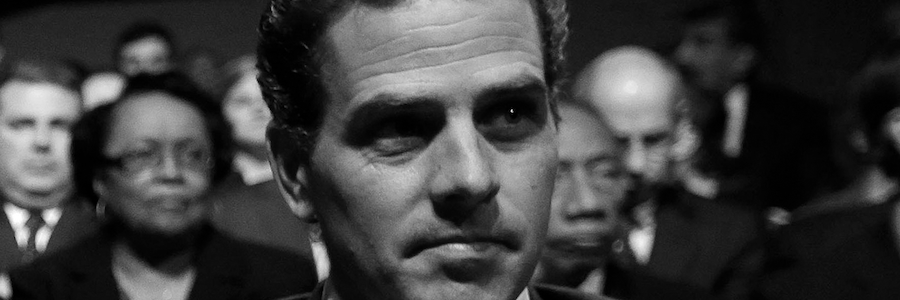

Twitter has deemed the following thoughts to be unsafe to your fragile mind.
by The Artful Dodger
Last updated October 19, 2020 at 12:40pm PST

I work in tech. Over the last few months, censorship efforts have ramped up to an alarming level and I'm beginning to worry our industry is having a devastating effect on American democracy. The problem has progressed rapidly from standard media bias and spin to overt efforts at controlling political discourse in our country, and I've gotten a distinct sense that it's panic time.
The feeling is awful. Like being at the top of a ski slope you just aren't ready for.
I'm going to share some insider details with you that, once you know them, contextualize recent events in a way that begins to make sense. Recently, I'd begun to feel like everyone in U.S. politics had simultaneously lost touch with reality except me. Like I was in that episode of Black Mirror where criminals are punished by "wiping" their memory each morning and allowing tourists to scare confused inmates by wearing Halloween masks and threatening them with chainsaws. Once you understand some of the industry details, you'll see clearly what needs to change.
Who am I?
So it's 1 a.m. in California and I'm sweating bullets, feeling as confused and alone as the protagonist in a sci-fi thriller. I work in the tech industry, so I don't want to reveal too much about what and where for fear my career will be impacted. But, broadly, I have worked in the machine learning groups at a number of major Silicon Valley giants. Much of my time has been spent attacking problems that arise naturally in social media, like natural language processing and image recognition. If you need someone to build an algorithm to understand text written by a human, I'm your guy, basically.
When you build a machine learning algorithm — what some folks call "AI" in this setting — you start with what they call training data. This data is fed to the algorithm so it can "learn" the task at hand. For example, if you want to train an AI to find pictures with nudity, your training data would be a bunch of pictures and a tag for each one regarding whether it contained nudity. Simple.
So if you're an AI expert, someone comes to you with some training data, and you figure out the best AI for that problem domain. Different things work better for different problems, of course. So it is crucial for the researcher to understand how the training data was obtained. Without this information, he's doing his job blind.
Which brings me to my work. As you probably know, your Twitter or Facebook news feed isn't just a chronological list of what your friends said and did; this is how it was at the beginning, but not anymore. That takes too much power away from the networks! Nowadays, an algorithm (The Algorithm, writ large) determines what content to serve you by balancing a variety of different objectives: ensuring your ongoing engagement, profiting off your attention, and creating virality. These are the factors that affect what you see: it has precious little to do with what you'll actualy enjoy. You're a commodity to us.
So after years working in the AI space, as the election got closer, I began to hear more and more about project assignments involving politics-themed content where the boss would be cagey and vague about the end goal. These assignments were nearly always classification problems on text: AI meant to understand human messages like social media comments. Now it's not unheard of to build features specifically geared toward current events-type content, the sudden fascination specifically with inferring ideology from speech seemed odd. But even weirder was the reluctance to give context around the problem statement. That's extremely weird! It makes the job much, much harder to not fully understand the real-world problem being solved. I've heard of this with respect to big Wall Street firms who don't want any individual to know too much about their strategy… but at a social media company? Unheard of.
Social networks are using AI to filter out wrongthink
So I'll need to be a bit vague here, but long story short, I did some investigating. My hypothesis, based on the strange circumstances I outlined above, was that the networks wanted to be able to detect whether a particular comment related to this Hunter Biden email scandal was positive or negative with regard to Joe Biden. The reason I figured this might be the case is simply that the networks cannot censor the story entirely — it's both obvious and impractical. But what better trick than to simply give the illusion of fairness, all while giving you an extra dose of vote for Biden? That seems like the best option from their perspective. And what little I understood of the company's true intent made me think that was likely. It also explained the need to censor it entirely for a few hours while the engineers got a 911 fix in.
Well, it's easy to test. I went on one of my social accounts and began furiously typing out comments that discussed the Hunter Biden emails — without profanity or reason to alarm anyone — always with a negative view of the Democratic candidate. I was some 15 comments in when suddenly a screen popped up saying my account was suspended for nefarious activity that violated TOS. Obviously I did no such thing. Obviously I triggered something with my anti-Biden comments. And incredibly, this was no ordinary suspension: this was a one-week marathon suspension, longer than anything I've heard of before.
Overview of the Biden corruption scandal
The Hunter Biden email scandal is indisputably one of the most consequential corruption investigations of all time. Just weeks before an election, the New York Post exposes a trove of evidence demonstrating conclusively that:
- The Bidens have been selling their influence for decades, including to corrupt oligarchs seeking to manipulate U.S. foreign policy to bully their business or political adversaries;
- Joe Biden has engaged in fraudulent behavior by not disclosing the shares held in trust for him by Hunter, ostensibly to avoid questions about conflicts of interest;
- Joe Biden has been taking half of the payments made to Hunter in some under-the-table fashion, and this hasn't been properly declared on tax returns; and
- Perhaps worst of all, this corruption isn't just related to Russia and the Ukraine — the Chinese government has also purchased the Bidens' influence, which makes some of his oddly pro-China remarks seem more sensible. (Remember when he derided Trump's decision to close the border to China during the pandemic as "xenophobic" and "hysterical"?)
Until recently, this was all based on the word of a tipster who purportedly came into possession of Hunter Biden's laptop — and, while it would take a lot of effort to fake the many pictures and emails released, it was still conceivably possible that the material wasn't genuine.
Has it been confirmed to be real?
But then Fox News was able to validate the emails are real by contacting some of the other recipients on them. They reported this on air — so if they were wrong, the Biden campaign would have a lawsuit against Fox News, one that would among other things force them to stop reporting on it. That, of course, hasn't happened. And now, days have gone by, and Joe Biden's campaign hasn't even tried to deny the veracity of the emails. Indeed, the campaign essentially admitted that they were genuine and that the meetings they discuss did in fact happen.
The coordinated media blackout and cover-up
But that's not the scary part — politicians have been corrupt forever. The scary part is what happened next — a coordinated blackout between social media and mainstream media.
First, Facebook "limited circulation" of the bombshell article. Twitter suspended the Post's account and blocked anyone from sending the link, either via tweet or DM. After they came under fire from Congress, they removed that restriction but still left the article functionally blocked and the Post's account suspended, as they refused to submit to Twitter's demand they take down their article.
Then, days went by, and there was little-to-no mainstream reporting anywhere except Fox News, except of course for dismissive hot takes that lob the vague "Russian disinformation" accusation at everything we've mentioned. Richer still, a list of 50 former intelligence community members signed a letter indicating that the emails had "all the hallmarks of Russian disinformation" — a clever ploy seemingly designed to avoid the most immediate question of whether the emails are real or not. After all, who cares what hallmarks the emails have as long as they're real? Even the Biden team isn't disputing they're real. For that reason, anybody who invests the effort to sign a letter like this before taking the time to even ask Joe Biden whether he's crooked has no credibility in my mind.
And while numerous sources have confirmed that these emails are real and are definitely not "disinformation," this Orwellian struggle to deny reality continues unabated.
I repeat: there have been zero simple, factual articles on this in the mainstream media. And it is censored on social media.
Was impeachment a cover-up, too?
I knew those industries "leaned" toward the Democrats' side, but I thought we all had enough fundamental respect for the system of democracy that we knew better than this. It's disgusting to see grown adults fight over who gets to run a country none of them created, but even more heinous to see people subverting the very system that gave them this great country to run in the first place in the name of gaining power for a few years. It's like the 2020 Democrats are suddenly okay with destroying America if they get to be in power for four years, and they don't think through what happens after. Makes no sense.
Imagine if a trove of emails was discovered demonstrating the Trump family had sold their influence for cash in a scheme like this. Can you possibly imagine the media just skipping it? This would be headline news for months and rightly so. The House impeached Donald Trump over simply inquiring about Biden's activities on a recorded phone call with Ukraine whose transcript was made public — and now we find out that the Bidens have been knee-deep in Ukrainian corruption for decades, but media interest has evaporated?
Is it possible the Democrats impeached Trump precisely because he was on the right track?
Make no mistake: we are rapidly becoming everything we say we despise. Free speech has been curtailed, our press is no longer free or independent, and the Democrats appear to have unwittingly nominated a candidate who is simply ineligible by way of corruption.
And while I understand how disappointing that is, we all need to see what's going on here for what it is: the elites in our country — the media, the politicians, even business leaders — are collaborating on something. And whatever they're doing, it definitely involves trying to pull the wool over the eyes of the American people, and they definitely want us to vote Biden for some reason.
What I most admire about Americans is our adherence to principle; dedication to the principles of free speech and democracy do overwhelm individual political affiliations and beliefs for many people. They care more about preserving our freedoms for the next generation than they do about having their way on political matters like tax plans and immigration details. But for others, America has become a frighteningly partisan place, where all questions are viewed in a partisan light.
The deployment of AI for political ends
This may be the first case in American history where AI has effectively been weaponized by the private sector for use against the people in order to achieve political ends. Certainly it raises many new questions about ethics in computing that will no doubt be debated for generations. By using AI to curate what information we consume based on their objectives, not ours, the tech giants have made us unwitting participants in the most expansive global brainwashing effort ever undertaken.
Which brings me to my work. I believe social networks are using models like the ones I have built to create echo chambers that specifically amplify messages beneficial to the Democrats' side. So there are many people on social media who — all day — see nothing but "news" (real or fake, who knows) that confirms every horrible suspicion about Trump and alleviates any concerns about Biden.
We cannot judge these people — the evil is in manipulating, not being manipulated. That said, we must get through to them before November 3.
You see, it's not link-blocking that's the evil part of social media — it's that these social networks define what goes on your news feed, and they're manipulating what you see so they can manipulate what you think. In this case, they have been manipulating what you think about politics using my machine learning models. This cannot be allowed to go on.
And so, I — a man who would never have considered voting for Donald Trump before — know that I need to. We need to send a message to the Democratic Party or they'll never reform, and we'll just be in this same position next election, deciding between a Republican (who may or may not be a good candidate) and a corrupt-to-the-core Democrat. We can't reward this kind of behavior or it'll happen again.
Choose wisely. The country depends on it.
The Democratic party has become rotten to the core at the top… the answer is vote 'em out of office. Big time. Let's elect Trump by huge numbers… and you know what the Democrat party will do? They'll go back and reform. That's what happens when the public speaks. It's happened to Republicans, it's happened to Democrats.